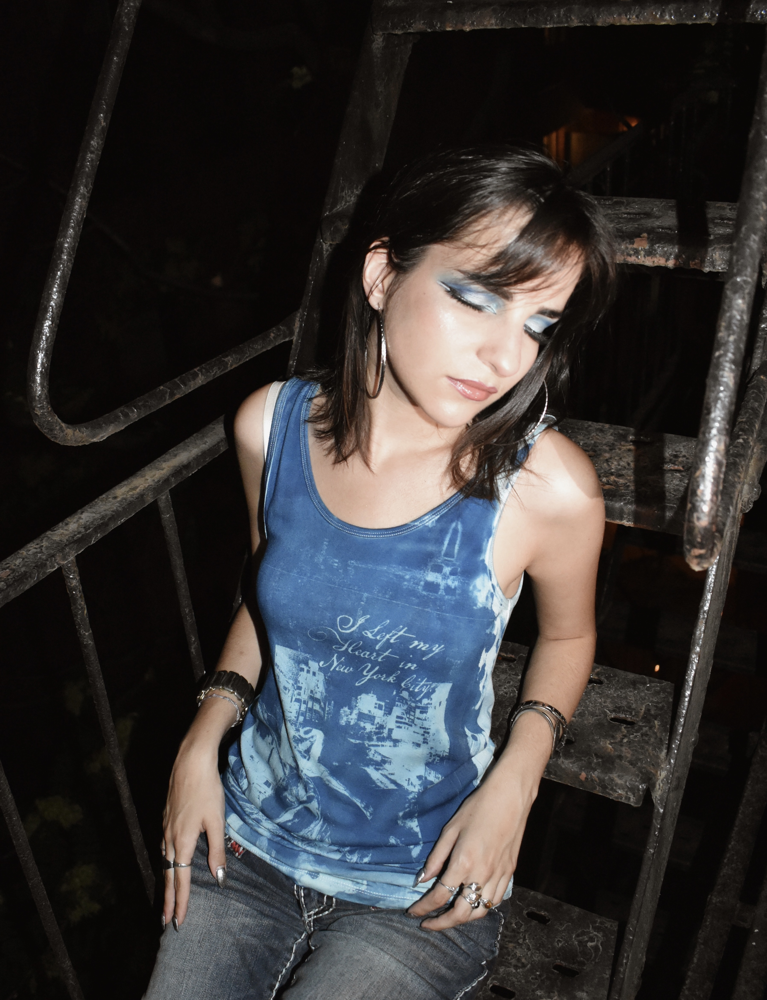

07.2024-PRESENT



As the Founder and CEO of WILDCARD, a sustainable fashion business, my mission is to push for a more sustainable and artistic future in fashion. Each piece in my collection is meticulously crafted from ethically sourced and upcycled materials, reflecting my commitment to environmental responsibility and innovative design. I oversee every aspect of the creative process, from graphic design and brand development to social media marketing, website design, and photography. I strive to inspire others and set new standards in the fashion industry and encourage others to join me on this journey towards a greener, more beautiful world.